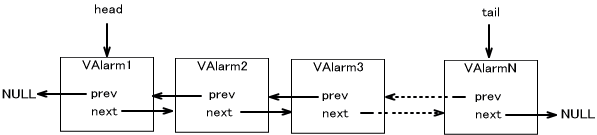
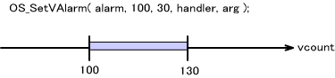
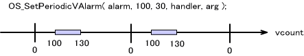
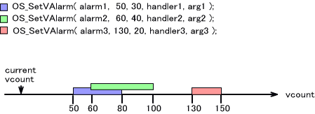
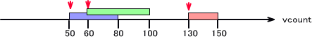
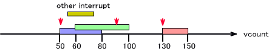
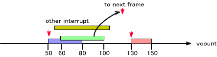
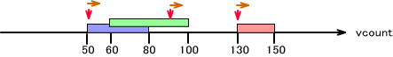
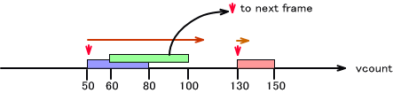

Vカウントアラームは、LCDの走査ステータスであるVカウンタレジスタの値と Vカウンタ一致割り込みを用いて、任意のVカウントで指定のハンドラを呼ぶよう設定することの出来る機能です。チック(内部でハードウェアタイマを使用しています) を用いたアラームとは仕組みが全く異なります。
初期化
Ｖカウントアラームシステムを使用するときは、最初に OS_InitVAlarm() を呼んでください。
Vカウントアラームシステムが使用可能かどうかは OS_IsVAlarmAvailable() で調べることが出来ます。
Vカウントアラームシステムを終了するには、OS_EndVAlarm() を呼んでください。
Vカウントアラームの設定
Vカウントアラームを設定するには OSVAlarm 構造体オブジェクトを用意してください。このオブジェクト1つに対し、1つのVカウントアラームを設定することが出来ます。オブジェクトは
OS_CreateVAlarm() で初期化してください。
Vカウントアラームの設定は OS_SetVAlarm() 関数を用います。一定の周期でVカウントアラームハンドラが呼ばれる周期Vカウントアラームを設定するには
OS_SetPeriodicVAlarm() 関数を呼んでください。
Vカウントアラームのキャンセル
設定した Vカウントアラームをキャンセルする場合は OS_CancelVAlarm() を呼んでください。これは指定した 1つのVカウントアラームをキャンセルします。
すべてのVカウントアラームをキャンセルする場合は OS_CancelAllVAlarm() となります。
タグ値を指定してキャンセルする方法もあります。(後述)
Vカウントアラームタグについて
Vカウントアラームには、1〜255のタグ値を与えることができます。この値は、あるタグ値のVカウントアラームをすべてキャンセルする、という用途に使用します。
タグ値はすでにセットされたVカウントアラームに対し OS_SetVAlarmTag() でセットします。
タグ値を指定してキャンセルする関数は OS_CancelVAlarms() となります。( 複数形の「s」が付いています。)
内部データ構造
Vカウントアラーム構造体 OSVAlarm は、Vカウントアラームの発生順にリンクリストで繋がっています。
従って、そのVカウントアラーム構造体がまだリストに繋がっている(すなわち、まだVカウントアラームが発生していない)ものを使って別のVカウントアラームをセットしようとすると、リンク構造が崩れることになってしまいますのでこのようなことは行なわないでください。これを検出すると、ライブラリではビルドに関係なく
OS_Panic() で停止します。

また、まだリストに繋がっている状態で(すなわち、まだVカウントアラームが発生していない状態で)、Vカウントアラーム構造体に対し
OS_CreateVAlarm() で初期化を行なうこともリンク構造の破綻につながるため禁じられています。この場合、動作は不定となります。
Vカウントアラームの遅れについて
前述の通り、Vカウントアラームの設定は OS_SetVAlarm() 関数を用います。設定は、指定のハンドラを呼ばせたいVカウントタイミングと、遅れの許容範囲(ここではディレイと呼びます)のVカウント差分を指定します。これは、他の割り込み処理やストールなどで指定のVカウントでアラームハンドラを呼ぶことが出来ないときに、どのぐらいの時間まで遅延を許容するかを指定するものです。
「必ず指定のタイミングでのみ呼ばせたい」という場合は遅れの許容範囲は0となり、OS_VALARM_DELAY_MAX を指定すると、「指定タイミング以降でVカウントアラームを発生できるならいつでもよい」という意味になります。ディレイはこの範囲で指定します。
下の命令では、Vカウント=100、ディレイ=30でアラームを指定しています。システムは出来るだけVカウント=100の時にハンドラを呼び出そうとしますが、それに間に合わなければ Vカウント=130までなら呼び出しを行ないます。

Vカウントアラームには周期アラームも用意されており、これは指定のVカウントで、毎フレームVカウントアラームを発生させるものです。設定関数は
OS_SetPeriodicVAlarm() となります。

複数のVカウントアラームが同じタイミングのVカウントで設定されていたり、そのタイミングやディレイの範囲が重なっていても構いません。
例
例えば、次のような３つのVカウントアラームを考えます。

Vカウントアラームを邪魔するほどの負荷が他に無い場合は指定のタイミング ( Vカウント=50、Vカウント=60、Vカウント=130 ) でそれぞれのVカウントアラームハンドラが呼び出されます。すなわち、下の図の赤い矢印「↓」で示した個所がVカウントアラームの発生する場所となります。

1番目のVカウントアラームの後、割り込みが入り、２番目のVカウントアラーム発生時刻を少し越えるまで処理が及んだ場合、以下のようにディレイ範囲であればずらしてそのVカウントアラームを発生させます。

さらに処理が長く、ディレイの範囲にもVカウントアラームを発生させることが出来なかった場合、そのVカウントアラームは次のフレームに回されます。（このVカウントアラームが周期Vカウントアラームだった場合は、そのフレームでの処理は行なわないということになります。)

このようにVカウントアラームが次のフレームに回されるような事例はVカウントアラーム以外の割り込みが重かったという要因以外にも、Vカウントアラームハンドラの処理自体が重過ぎる場合にも発生することがあります。下の図では矢印「→」でそのVカウントアラームハンドラ処理の経過時間を表します。これはすべて短時間でハンドラの処理が終り、他のVカウントアラームに影響を与えない例です。

それに対し、1つ目のVカウントアラームの処理が非常に重く、2つ目のVカウントアラームを発生する期間さえ過ぎるような場合、2番目のVカウントアラームは次のフレームに回されます。

通常は、割り込みハンドラはすぐに終わるような処理を行なうように推奨されています。
MP通信のVブランク同期による Vカウンタレジスタ値の変化
MP通信を行なっている際、親機と子機とでVブランク同期を取った結果、202 から 210 の間で Vカウンタレジスタの値が変更される場合があります。変更は常に元の値より小さい値がセットされます。( 208 をより小さい 205 に変更する、というように。) この間で Vカウントアラームを設定する場合は注意して下さい。
2007/10/16 用語統一 [ワイヤレス同期]→[MP通信のVブランク同期]
2005/03/08 用語統一 [割込み] → [割り込み]
2004/12/13 用語や語尾など修正
2004/11/24 ワイヤレス同期による vcount の変化を追記
2004/10/25 初版 (OS_InitVAlarm() から分離)